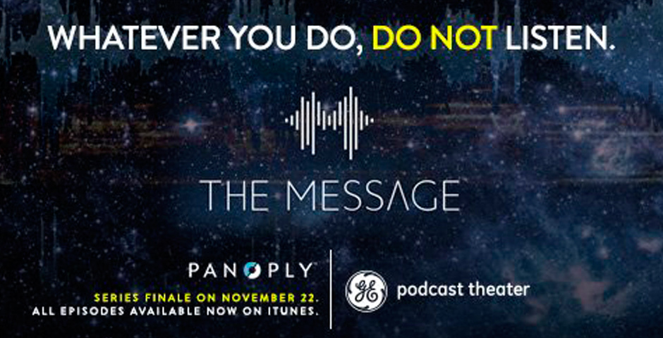
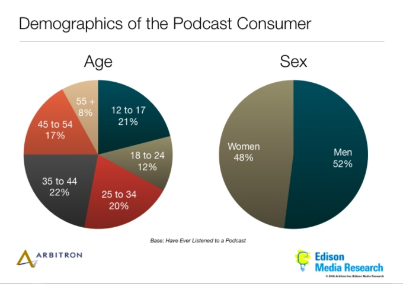
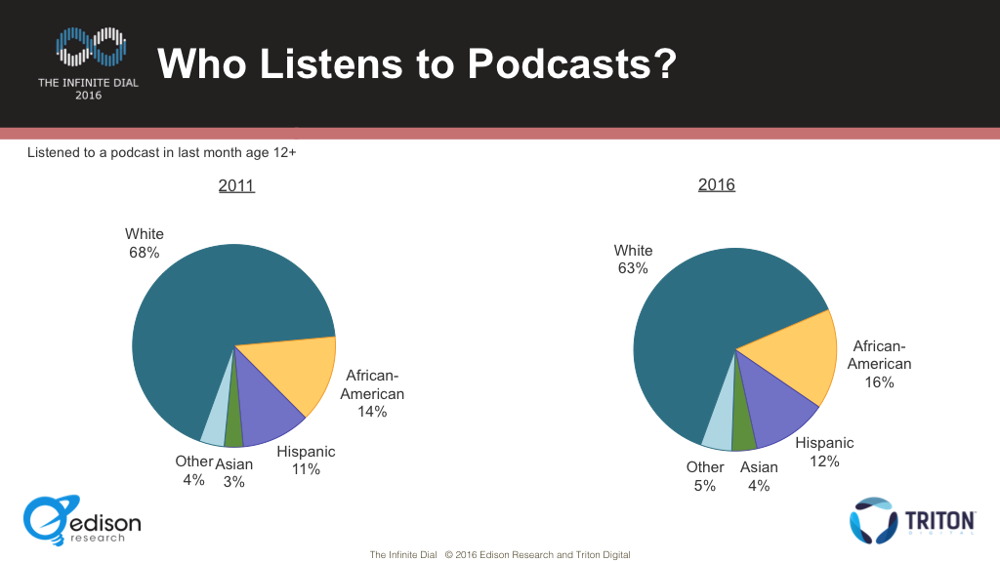
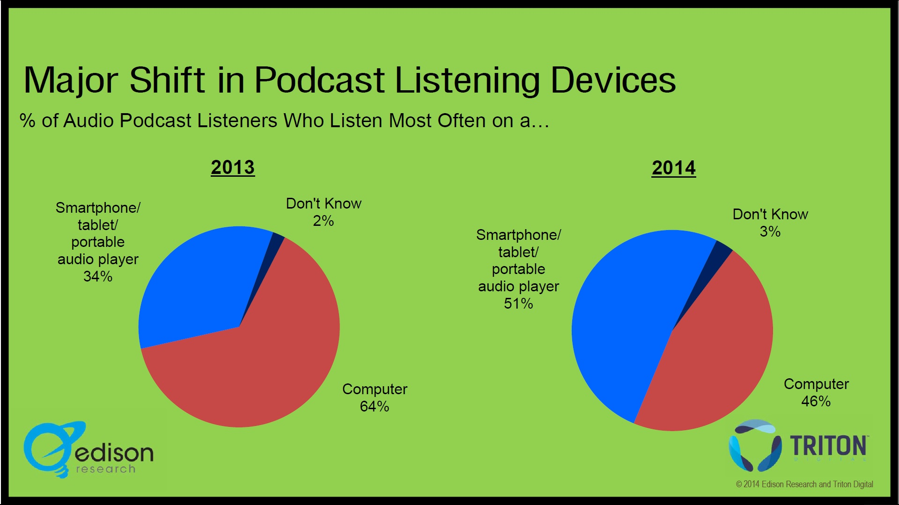

a form of media distribution that blends audio files with syndicated audio publishing (like blog posts)
How is it different from broadcasting?
Digital (digital files, downloaded and accessed)
Asynchronous (time shifting and place-shifting)
Production (lower barriers to entry - but not ALWAYS)
Access (only limited by access to internet)
So what do podcasts sounds like?
Conversational
Interviews
Game Shows
News Shows
Narratives
Media tie-in
They can be... Comedies, Dramas, Mysteries, Horror, Sci-Fi, Historical, Educational
Who makes podcasts?
Independent users/groups/orgs
Public Radio networks/stations (NPR, KCRW, WNYC, etc)
Podcast Networks (podcast-first program distribution)
Commercial Media Companies (Discovery, etc.)
How do Podcasters make money?
Sometimes they don’t. *sad trombone*sponsorships/ad spots - Blue Apron! Casper! Harrys Razors! branded episodes [MBMBaM Totinos episode]sponsored series [GE, Goldman Sachs, eBay] Podcast netowrks (Midroll (Earwolf), Panoply, Gimlet - Networks can afford to buy/sell ad spots at scale
Who listens to podcasts?

Podcasts and/as convergence media!
Big Questions
What can radio/media history teach us?
What are the aesthetics of podcasts?
How big will podcasting get?
How do we archive/preseve podcasts?
Can it still give independents a voice?